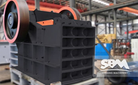
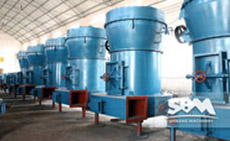
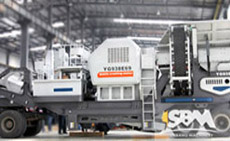

more >>PRODUCTS
VSI5X sand making machine
SBM VSI 5x sand making machine efficient technical performance in the leading domestic similar products and reach international advanced level.
- 
HJ Series Jaw Crusher
HJ Series Jaw Crusher will break large stones into small stone in the process.
Detail - 
Raymond Mill
Development of China's rapid development of various industries are closely linked; especially mill industry.
Detail - 
Mobile Crusher Station
mobile Jaw crusher station is by crushing machinery, screening machinery and auxiliary equipment.
Detail
more >>LATEST NEWS
How to install large jaw crusher machine?
Jaw crusher is also called jaw broken, commonly known by the dynamic jaw and static jaw the two jaw plate composed of crushing chamber.
- [2015-01-20]Professional large granite crusher equipment
- [2015-01-19]Sand production line equipment running and debugging methods
- [2015-01-18]Three classification of plastic crusher machine

We Want To Know
We're here to help: Easy ways to get the answers you need. (Click on here)
service onlineGet to Know SBM
-
Our Company Mission
SBM is committed to combination of the modernization advanced technology and excellent traditional technology, continuous struggle for the realization of customer and employee value maximization.
-
Supply Diversity
SBM offer Pre-sales Service and After-sales Service to meet you desire.profession production solution and High efficiency is your best choice.
-
Company Honor
SBM with a strong scientific research team, innovation, the cutting edge of technology aimed at industry, continuously improve the scientific and technological innovation the overall capacity of enterprises.
Customs Feedback
our company is a large stone production company, the production line is located at the foot of the mountain, the purchase of equipment is mainly used for the mountain mining rock crushing, stone used in production to meet customer demand.---John emil
Another Customer Voice:
There are another customer processing, the production of larger, configuration SBM PEW crusher, impact crusher PFW and other feeding and screening equipment, high crushing efficiency, high output, less needle flake stone.---Able bob
Contact Us
Fill in this form or click the service online, all questions will be answered.